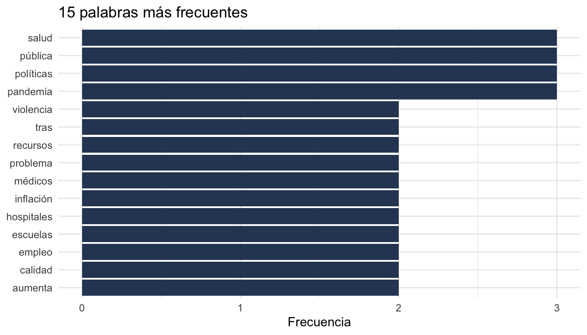
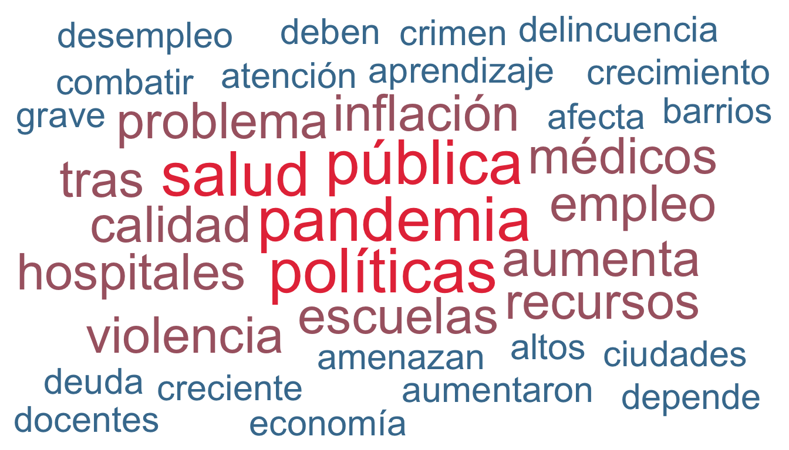
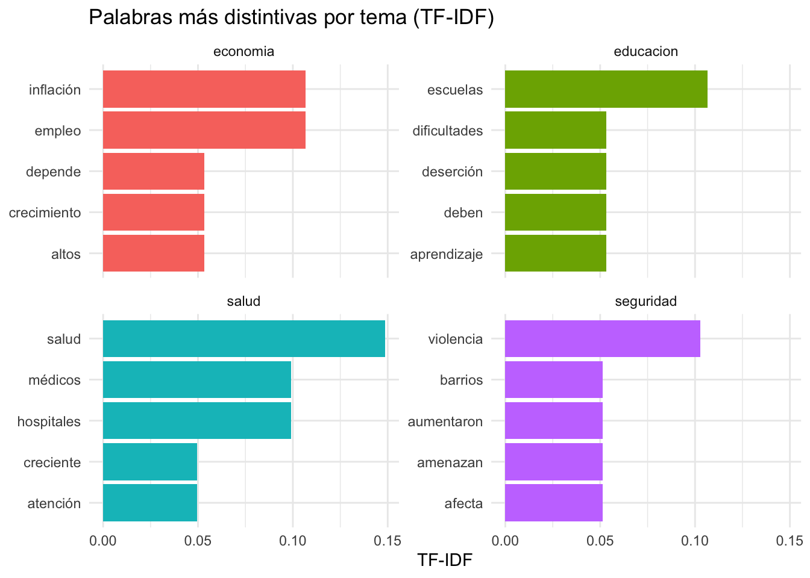
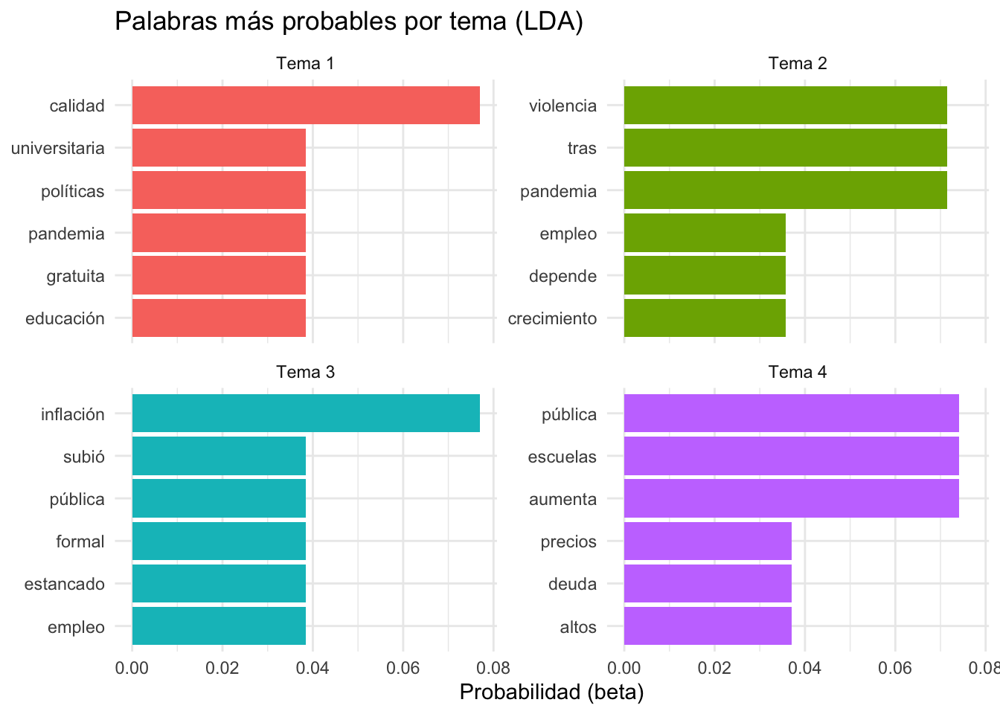
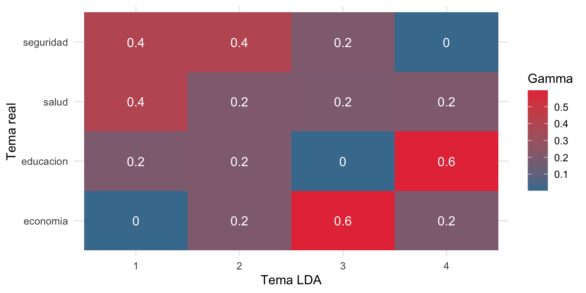

library(tidyverse) # manipulación de datos y visualización
library(tidytext) # tokenización tidy, TF-IDF, cast_dtm
library(topicmodels) # LDA
library(tm) # stopwords en español
library(ggwordcloud) # nubes de palabras
set.seed(2026) # fijar semilla para reproducibilidadReferencia rápida: análisis de texto en R
Esta página es una referencia rápida de las funciones de análisis computacional de texto que usamos en la Sesión 3.2 y en el Laboratorio 6. Todos los ejemplos son ejecutables con un corpus simulado pequeño. Pueden copiar y pegar el código en RStudio para practicar.
El flujo típico de análisis de texto es:
- Cargar el corpus
- Tokenizar (una fila por palabra)
- Limpiar: stopwords, números, palabras cortas
- Calcular frecuencias
- Aplicar una representación numérica (bag-of-words, TF-IDF)
- Ajustar un modelo (LDA, sentimiento, clasificación)
- Validar e interpretar
1 Paquetes y corpus simulado
1.1 Cargar paquetes
1.2 Crear un corpus simulado
Simulamos 20 textos cortos sobre 4 temas (economía, educación, salud, seguridad). Cada texto imita el vocabulario típico del tema. Usaremos este corpus en toda la página.
corpus <- tibble(
id = 1:20,
tema = rep(c("economia", "educacion", "salud", "seguridad"), each = 5),
texto = c(
# Economía
"La inflación subió y el empleo formal sigue estancado en la región",
"El crecimiento económico depende de la inversión privada y el empleo",
"La deuda pública aumenta y los precios siguen altos en el país",
"Políticas fiscales y monetarias deberían estabilizar la inflación",
"El desempleo juvenil es un problema grave para la economía",
# Educación
"Las escuelas públicas necesitan más docentes y mejor infraestructura",
"La educación universitaria debería ser gratuita y de calidad",
"Los estudiantes enfrentan dificultades de aprendizaje tras la pandemia",
"Las universidades deben invertir en investigación y docencia",
"La deserción escolar aumenta en las escuelas rurales del país",
# Salud
"El sistema de salud pública requiere más hospitales y médicos",
"La vacunación masiva protegió a millones de personas en la pandemia",
"Los hospitales públicos no tienen suficientes recursos ni médicos",
"La salud mental es un problema creciente tras la pandemia",
"Las políticas de salud deberían priorizar la atención primaria",
# Seguridad
"La violencia urbana y los robos aumentaron en las ciudades",
"El crimen organizado y el narcotráfico amenazan la seguridad pública",
"La policía necesita más recursos para combatir la delincuencia",
"La inseguridad afecta la calidad de vida en los barrios pobres",
"El gobierno debe reducir la violencia con políticas integrales"
)
)
glimpse(corpus)Rows: 20
Columns: 3
$ id <int> 1, 2, 3, 4, 5, 6, 7, 8, 9, 10, 11, 12, 13, 14, 15, 16, 17, 18, 1…
$ tema <chr> "economia", "economia", "economia", "economia", "economia", "edu…
$ texto <chr> "La inflación subió y el empleo formal sigue estancado en la reg…2 Tokenización
2.1 Tokenizar con unnest_tokens()
unnest_tokens() divide cada texto en palabras, genera una fila por token y convierte todo a minúsculas. Es la función central de tidytext.
tokens <- corpus |>
unnest_tokens(palabra, texto)
head(tokens, 10)# A tibble: 10 × 3
id tema palabra
<int> <chr> <chr>
1 1 economia la
2 1 economia inflación
3 1 economia subió
4 1 economia y
5 1 economia el
6 1 economia empleo
7 1 economia formal
8 1 economia sigue
9 1 economia estancado
10 1 economia en 2.2 Otras unidades de tokenización
Cambiando el argumento token, podemos trabajar con bigramas, oraciones o caracteres.
# Bigramas (pares de palabras consecutivas)
corpus |>
slice(1:2) |>
unnest_tokens(bigrama, texto, token = "ngrams", n = 2) |>
head(6)# A tibble: 6 × 3
id tema bigrama
<int> <chr> <chr>
1 1 economia la inflación
2 1 economia inflación subió
3 1 economia subió y
4 1 economia y el
5 1 economia el empleo
6 1 economia empleo formal # Oraciones
corpus |>
slice(1:2) |>
unnest_tokens(oracion, texto, token = "sentences") |>
select(id, oracion)# A tibble: 2 × 2
id oracion
<int> <chr>
1 1 la inflación subió y el empleo formal sigue estancado en la región
2 2 el crecimiento económico depende de la inversión privada y el empleo3 Limpieza
3.1 Stopwords en español
Las stopwords son palabras muy frecuentes que aportan poco significado (“la”, “de”, “que”…). tm::stopwords("spanish") devuelve una lista estándar. Podemos ampliarla con términos específicos del dominio.
# Lista base en español
stop_es <- tibble(palabra = tm::stopwords("spanish"))
nrow(stop_es)[1] 308head(stop_es$palabra, 15) [1] "de" "la" "que" "el" "en" "y" "a" "los" "del" "se"
[11] "las" "por" "un" "para" "con" # Ampliar con palabras frecuentes poco informativas para nuestro corpus
extra <- c("más", "país", "países", "región", "sigue", "siendo",
"debe", "debería", "deberían", "ser", "siguen")
stop_es <- bind_rows(stop_es, tibble(palabra = extra))3.2 Quitar stopwords, números y palabras cortas
tokens_limpios <- tokens |>
anti_join(stop_es, by = "palabra") |>
filter(!str_detect(palabra, "^[0-9]+$")) |>
filter(nchar(palabra) > 2)
# Comparar antes y después
tibble(
etapa = c("con stopwords", "sin stopwords"),
n = c(nrow(tokens), nrow(tokens_limpios))
)# A tibble: 2 × 2
etapa n
<chr> <int>
1 con stopwords 196
2 sin stopwords 1074 Frecuencias de palabras
4.1 Palabras más frecuentes del corpus
tokens_limpios |>
count(palabra, sort = TRUE) |>
head(10)# A tibble: 10 × 2
palabra n
<chr> <int>
1 pandemia 3
2 políticas 3
3 pública 3
4 salud 3
5 aumenta 2
6 calidad 2
7 empleo 2
8 escuelas 2
9 hospitales 2
10 inflación 24.2 Visualizar las más frecuentes
tokens_limpios |>
count(palabra, sort = TRUE) |>
slice_head(n = 15) |>
mutate(palabra = fct_reorder(palabra, n)) |>
ggplot(aes(x = n, y = palabra)) +
geom_col(fill = "#2d4563") +
labs(title = "15 palabras más frecuentes",
x = "Frecuencia", y = NULL) +
theme_minimal()
4.3 Nube de palabras con ggwordcloud
geom_text_wordcloud() crea nubes de palabras con la estética de ggplot2.
tokens_limpios |>
count(palabra, sort = TRUE) |>
slice_head(n = 50) |>
ggplot(aes(label = palabra, size = n, colour = n)) +
geom_text_wordcloud(rm_outside = TRUE) +
scale_size_area(max_size = 14) +
scale_colour_gradient(low = "#457b9d", high = "#e63946") +
theme_minimal()
5 Bag-of-words
Bag-of-words es una representación donde cada documento es un vector de frecuencias. Ignora el orden pero funciona bien para muchos problemas.
bow <- tokens_limpios |>
count(id, palabra) |>
pivot_wider(names_from = palabra,
values_from = n,
values_fill = 0)
# Dimensiones: 20 documentos x N términos
dim(bow)[1] 20 89# Vista parcial
bow[1:5, 1:6]# A tibble: 5 × 6
id empleo estancado formal inflación subió
<int> <int> <int> <int> <int> <int>
1 1 1 1 1 1 1
2 2 1 0 0 0 0
3 3 0 0 0 0 0
4 4 0 0 0 1 0
5 5 0 0 0 0 06 TF-IDF
6.1 Calcular TF-IDF con bind_tf_idf()
bind_tf_idf() añade tres columnas: tf (frecuencia en el documento), idf (rareza en el corpus) y tf_idf (producto de las dos).
tfidf <- tokens_limpios |>
count(tema, palabra) |>
bind_tf_idf(palabra, tema, n)
head(tfidf, 10)# A tibble: 10 × 6
tema palabra n tf idf tf_idf
<chr> <chr> <int> <dbl> <dbl> <dbl>
1 economia altos 1 0.0385 1.39 0.0533
2 economia aumenta 1 0.0385 0.693 0.0267
3 economia crecimiento 1 0.0385 1.39 0.0533
4 economia depende 1 0.0385 1.39 0.0533
5 economia desempleo 1 0.0385 1.39 0.0533
6 economia deuda 1 0.0385 1.39 0.0533
7 economia economía 1 0.0385 1.39 0.0533
8 economia económico 1 0.0385 1.39 0.0533
9 economia empleo 2 0.0769 1.39 0.107
10 economia estabilizar 1 0.0385 1.39 0.05336.2 Palabras más distintivas por tema
Las palabras con tf_idf alto son frecuentes en un tema pero raras en el corpus global: son el “vocabulario característico” del tema.
tfidf |>
group_by(tema) |>
slice_max(tf_idf, n = 3, with_ties = FALSE) |>
arrange(tema, desc(tf_idf)) |>
select(tema, palabra, tf_idf) |>
mutate(tf_idf = round(tf_idf, 3))# A tibble: 12 × 3
# Groups: tema [4]
tema palabra tf_idf
<chr> <chr> <dbl>
1 economia empleo 0.107
2 economia inflación 0.107
3 economia altos 0.053
4 educacion escuelas 0.107
5 educacion aprendizaje 0.053
6 educacion deben 0.053
7 salud salud 0.149
8 salud hospitales 0.099
9 salud médicos 0.099
10 seguridad violencia 0.103
11 seguridad afecta 0.051
12 seguridad amenazan 0.0516.3 Visualizar TF-IDF por tema
tfidf |>
group_by(tema) |>
slice_max(tf_idf, n = 5, with_ties = FALSE) |>
ungroup() |>
mutate(palabra = reorder_within(palabra, tf_idf, tema)) |>
ggplot(aes(x = tf_idf, y = palabra, fill = tema)) +
geom_col(show.legend = FALSE) +
facet_wrap(~ tema, scales = "free_y", ncol = 2) +
scale_y_reordered() +
labs(title = "Palabras más distintivas por tema (TF-IDF)",
x = "TF-IDF", y = NULL) +
theme_minimal()
7 Análisis de sentimiento con diccionarios
Un método simple: lista de palabras positivas y negativas, contar apariciones, sumar.
pos <- c("crecimiento", "inversión", "calidad", "gratuita",
"protegió", "atención", "estabilizar")
neg <- c("inflación", "estancado", "deuda", "desempleo", "problema",
"dificultades", "deserción", "violencia", "crimen",
"narcotráfico", "delincuencia", "inseguridad", "pobres",
"robos", "grave", "amenaza")
sentimiento <- tokens_limpios |>
mutate(valencia = case_when(
palabra %in% pos ~ 1L,
palabra %in% neg ~ -1L,
TRUE ~ 0L
)) |>
group_by(id, tema) |>
summarise(puntaje = sum(valencia), .groups = "drop")
# Puntaje promedio por tema
sentimiento |>
group_by(tema) |>
summarise(promedio = round(mean(puntaje), 2),
n = n())# A tibble: 4 × 3
tema promedio n
<chr> <dbl> <int>
1 economia -0.8 5
2 educacion 0 5
3 salud 0.2 5
4 seguridad -1.4 58 Topic modeling con LDA
8.1 Crear la Document-Term Matrix
LDA necesita una matriz documento-término. cast_dtm() la construye a partir del formato tidy.
dtm <- tokens_limpios |>
count(id, palabra) |>
cast_dtm(id, palabra, n)
dtm<<DocumentTermMatrix (documents: 20, terms: 88)>>
Non-/sparse entries: 107/1653
Sparsity : 94%
Maximal term length: 15
Weighting : term frequency (tf)8.2 Ajustar LDA
Elegimos k = 4 porque sabemos que hay 4 temas. En aplicaciones reales, hay que probar varios K y evaluar coherencia.
modelo_lda <- LDA(dtm, k = 4,
control = list(seed = 2026))
modelo_ldaA LDA_VEM topic model with 4 topics.8.3 Palabras más probables por tema (beta)
beta es la probabilidad de cada palabra dentro de cada tema. Los valores más altos muestran el “vocabulario característico” del tema según LDA.
lda_beta <- tidy(modelo_lda, matrix = "beta")
lda_beta |>
group_by(topic) |>
slice_max(beta, n = 5, with_ties = FALSE) |>
summarise(palabras = paste(term, collapse = ", "))# A tibble: 4 × 2
topic palabras
<int> <chr>
1 1 calidad, políticas, educación, gratuita, universitaria
2 2 pandemia, tras, violencia, empleo, crecimiento
3 3 inflación, empleo, estancado, formal, subió
4 4 aumenta, pública, escuelas, altos, deuda 8.4 Visualizar palabras por tema
lda_beta |>
group_by(topic) |>
slice_max(beta, n = 6, with_ties = FALSE) |>
ungroup() |>
mutate(term = reorder_within(term, beta, topic)) |>
ggplot(aes(x = beta, y = term, fill = factor(topic))) +
geom_col(show.legend = FALSE) +
facet_wrap(~ topic, scales = "free_y", ncol = 2,
labeller = labeller(topic = function(x) paste("Tema", x))) +
scale_y_reordered() +
labs(title = "Palabras más probables por tema (LDA)",
x = "Probabilidad (beta)", y = NULL) +
theme_minimal()
8.5 Proporción de temas por documento (gamma)
gamma es la proporción de cada tema en cada documento. Suma 1 por documento. Permite asignar cada documento a su tema dominante.
lda_gamma <- tidy(modelo_lda, matrix = "gamma") |>
mutate(document = as.integer(document))
head(lda_gamma, 8)# A tibble: 8 × 3
document topic gamma
<int> <int> <dbl>
1 1 1 0.00229
2 2 1 0.00191
3 3 1 0.00229
4 4 1 0.00229
5 5 1 0.00229
6 6 1 0.00191
7 7 1 0.991
8 8 1 0.001918.6 Validar contra las etiquetas reales
Si LDA funciona, cada tema real debería concentrarse en un solo tema LDA. Una matriz de confusión muestra la correspondencia.
clasificacion <- lda_gamma |>
group_by(document) |>
slice_max(gamma, n = 1) |>
ungroup() |>
left_join(corpus |> select(id, tema),
by = c("document" = "id"))
table(real = clasificacion$tema, lda = clasificacion$topic) lda
real 1 2 3 4
economia 0 1 3 1
educacion 1 1 0 3
salud 2 1 1 1
seguridad 2 2 1 08.7 Heatmap de correspondencia real ↔︎ LDA
lda_gamma |>
left_join(corpus |> select(id, tema),
by = c("document" = "id")) |>
group_by(tema, topic) |>
summarise(gamma = mean(gamma), .groups = "drop") |>
ggplot(aes(x = factor(topic), y = tema, fill = gamma)) +
geom_tile() +
geom_text(aes(label = round(gamma, 2)), colour = "white") +
scale_fill_gradient(low = "#457b9d", high = "#e63946") +
labs(x = "Tema LDA", y = "Tema real", fill = "Gamma") +
theme_minimal()
9 Recomendaciones prácticas
- Empezar simple: frecuencias y TF-IDF revelan mucho antes de llegar a LDA.
- Ampliar stopwords con vocabulario específico del corpus. Las listas estándar no cubren todo.
- Palabras cortas: filtrar con
nchar(palabra) > 2elimina muchas siglas poco útiles. - LDA es inestable con corpus pequeños: probar varias semillas y distintos K.
- Validar siempre contra lectura manual de una muestra. La clasificación automática puede parecer convincente sin serlo.
- TF-IDF funciona por grupo: si calculan por documento vs. por tema vs. por país, obtendrán resultados distintos.
- El orden importa: anti-join de stopwords antes de filtrar por longitud evita contar tokens vacíos.
10 Resumen de funciones
| Función | Paquete | Para qué sirve |
|---|---|---|
unnest_tokens() |
tidytext | Tokeniza texto (palabras, bigramas, oraciones) |
anti_join() |
dplyr | Elimina filas que aparecen en otra tabla (útil para stopwords) |
bind_tf_idf() |
tidytext | Calcula TF, IDF y TF-IDF |
cast_dtm() |
tidytext | Convierte formato tidy en Document-Term Matrix |
cast_sparse() |
tidytext | Convierte en matriz dispersa (para SVD, embeddings) |
LDA() |
topicmodels | Ajusta Latent Dirichlet Allocation |
tidy() |
broom / tidytext | Extrae beta o gamma de un modelo LDA |
terms() |
topicmodels | Palabras más probables de cada tema |
stopwords() |
tm | Listas de stopwords en varios idiomas |
geom_text_wordcloud() |
ggwordcloud | Nubes de palabras con ggplot2 |
reorder_within() |
tidytext | Reordena factores dentro de facets |
scale_y_reordered() |
tidytext | Acompaña reorder_within() en gráficos |
Para la referencia de aprendizaje supervisado, ver Referencia: tidymodels. Para clustering y PCA, ver Referencia: aprendizaje no supervisado.